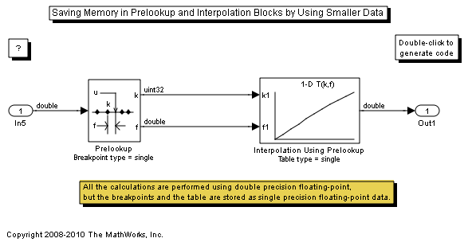

Saving Memory in Prelookup and Interpolation Blocks by Using Smaller Data
The Prelookup and Interpolation Using Prelookup blocks allow the data type storing breakpoints and table data to be set explicitly. Note that the Prelookup block allows the breakpoint data to differ from the input data type, and the Interpolation Using Prelookup block allows the table data to differ from the output data type.
In this model, the breakpoints and table are stored using single precision floating-point data type, and the calculations are performed using double precision floating-point data type. This reduces the amount of breakpoint and table data memory by half.
To see this in the generated code, open the model and build it.
